폐허 숲 — 바닥 패턴 24종
흙 6 · 풀 6 · 이끼 4 · 낙엽 2 · 돌바닥 4 · 공터 2. 이미지를 누르면 개별 파일을 확인할 수 있습니다.
게임에서 보기 · 나무·바위·폐허 20종 보기
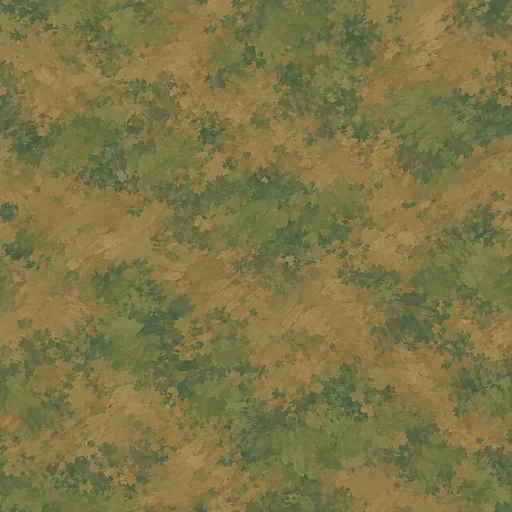
01. 마른 흙
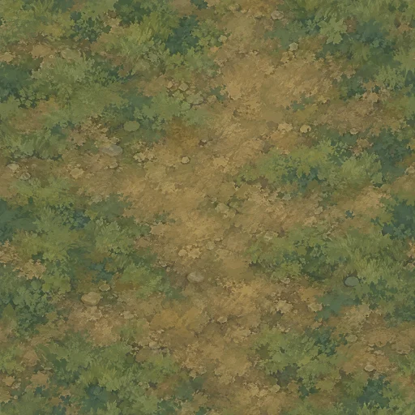
02. 다져진 흙
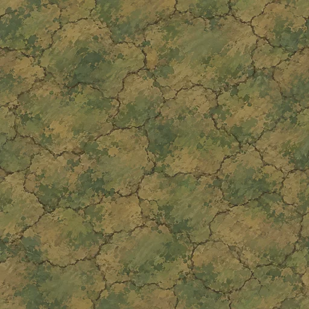
03. 갈라진 흙
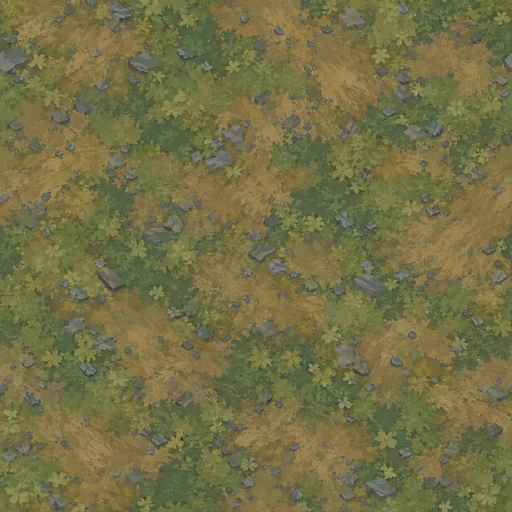
04. 자갈 흙
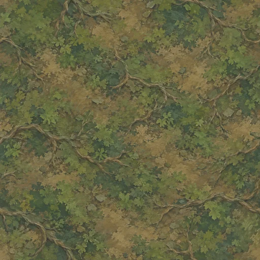
05. 뿌리 흙
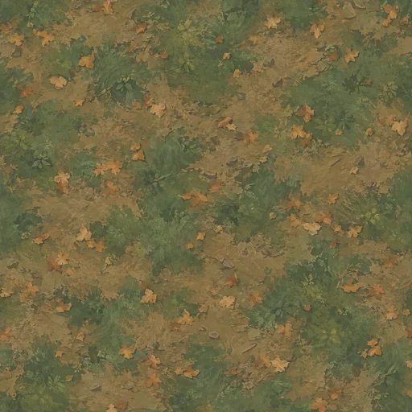
06. 낙엽 흙
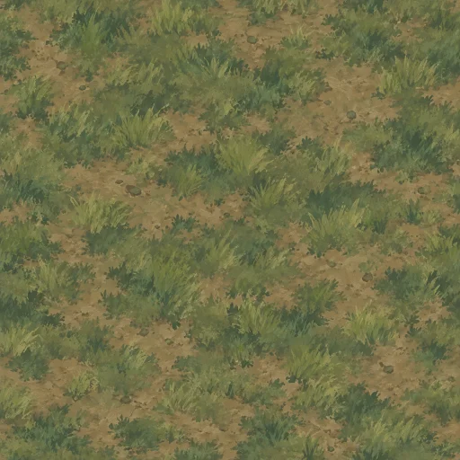
07. 짧은 풀
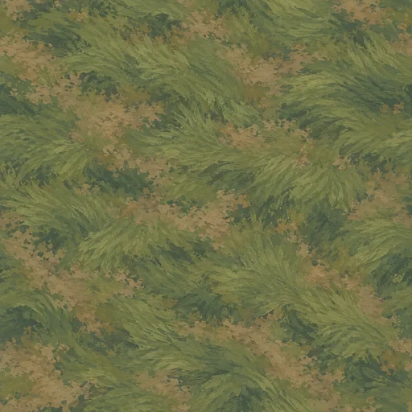
08. 긴 풀
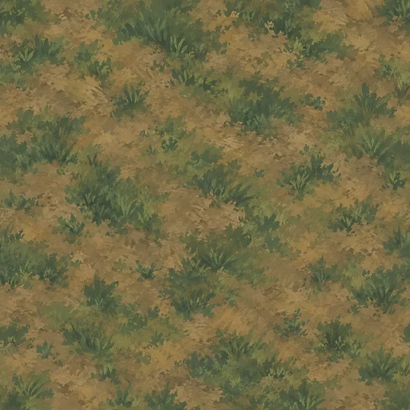
09. 성긴 풀
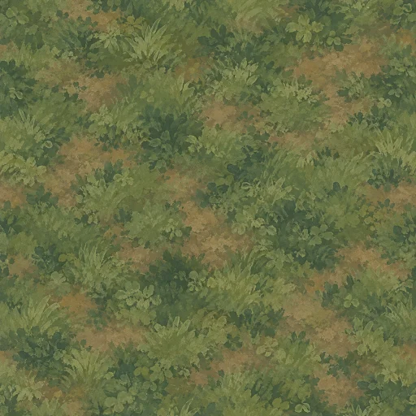
10. 빽빽한 풀
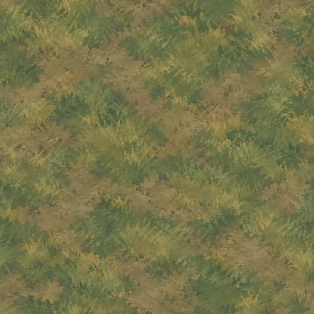
11. 마른 풀
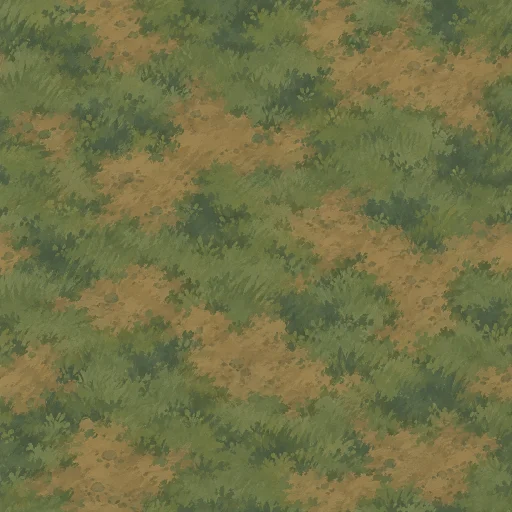
12. 풀 흙 경계
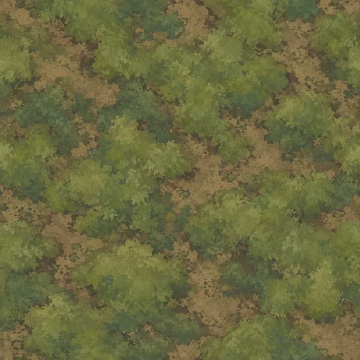
13. 부드러운 이끼
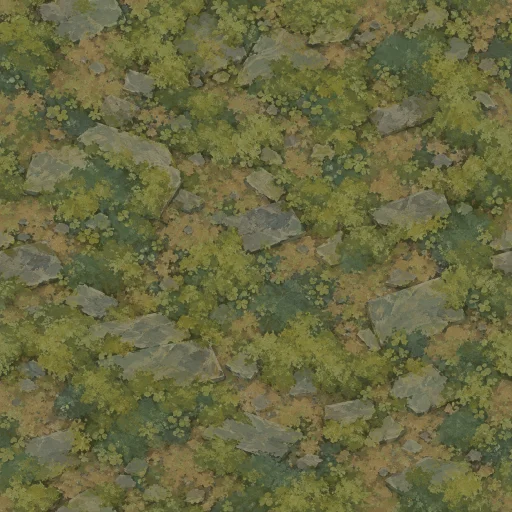
14. 돌 이끼
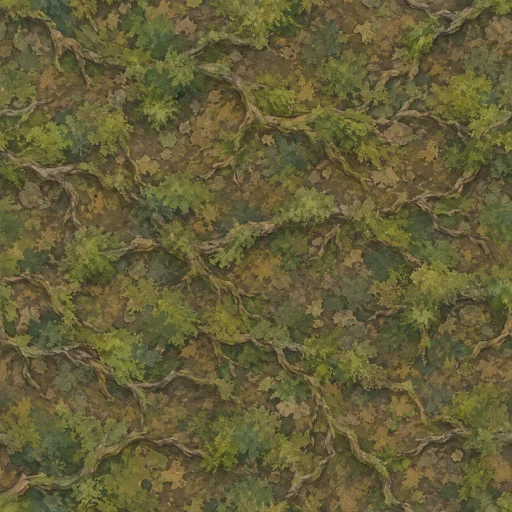
15. 뿌리 이끼
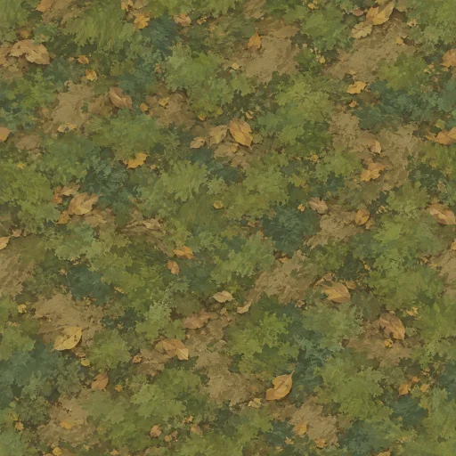
16. 낙엽 이끼
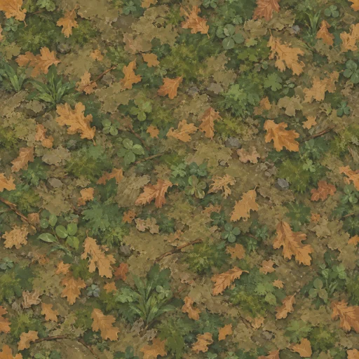
17. 참나무 낙엽
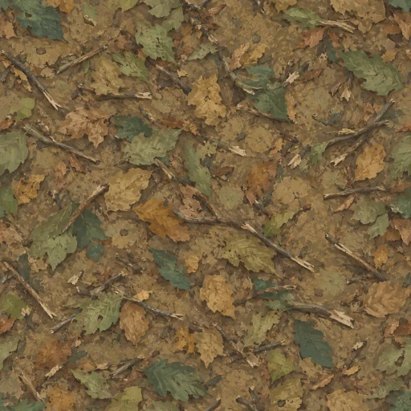
18. 잔가지 낙엽
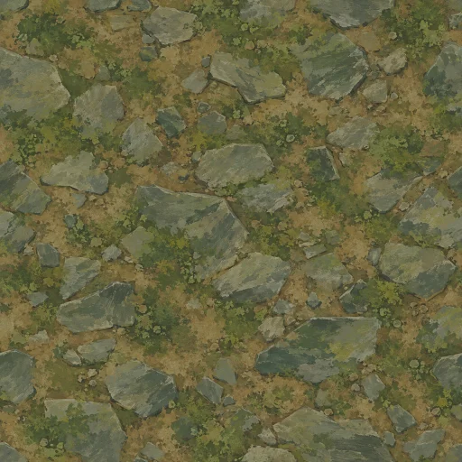
19. 묻힌 돌
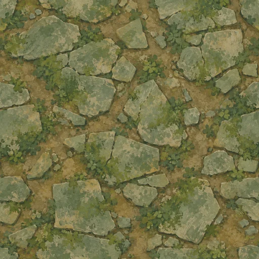
20. 옛 돌바닥
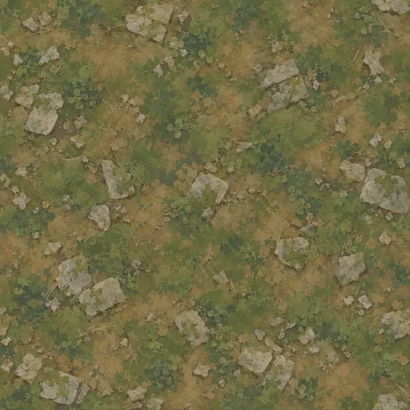
21. 돌 부스러기
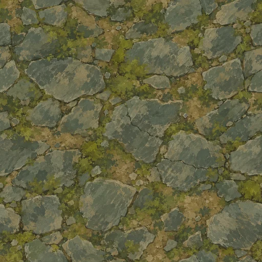
22. 금간 판석
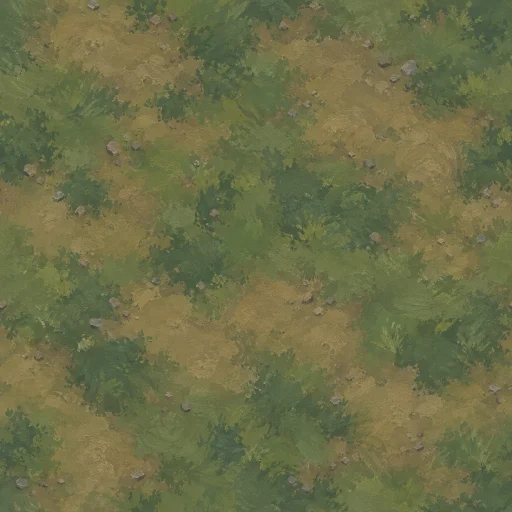
23. 공터 흙
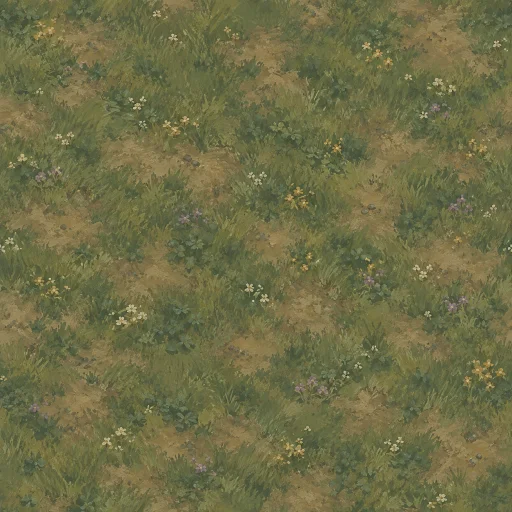
24. 공터 들풀